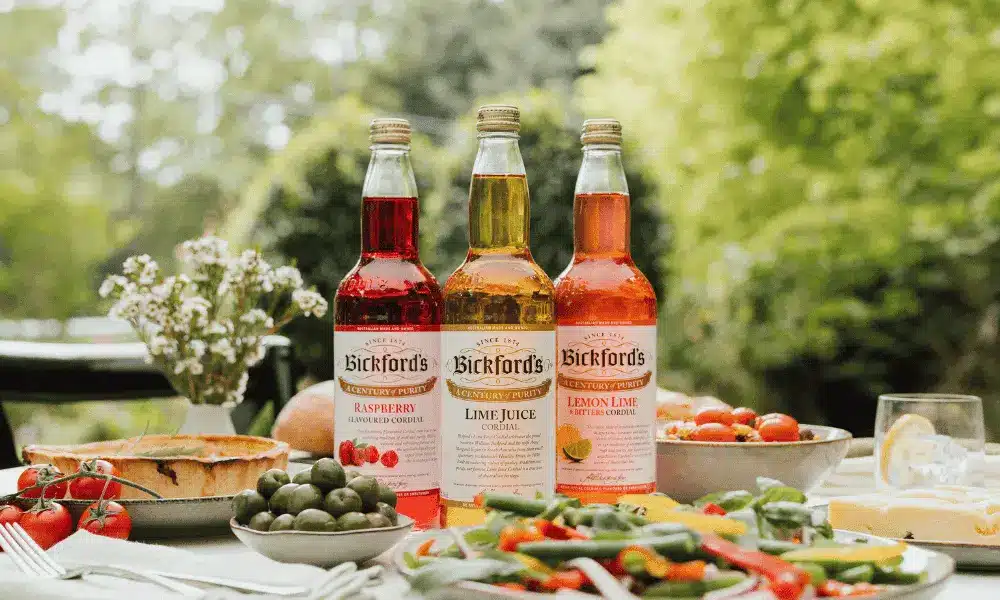

Australian Owned
Helping local businesses show their Australian roots with pride.
Australian Owned certification is not a physical product or service. Its value comes from what it represents: Australian ownership, support for local communities, and a commitment to keeping business local. The challenge was communicating those benefits in a way that felt tangible and worthwhile, helping businesses understand why certification could matter to both their customers and their brand.
Through clear messaging, benefit-focused content, and streamlined application pathways, the website helped connect the certification to the values behind it. Rather than presenting certification as simply a badge or logo, the focus was on helping businesses understand how it could reinforce their identity, communicate their values, and strengthen their connection with customers who actively seek to support Australian-owned businesses.
